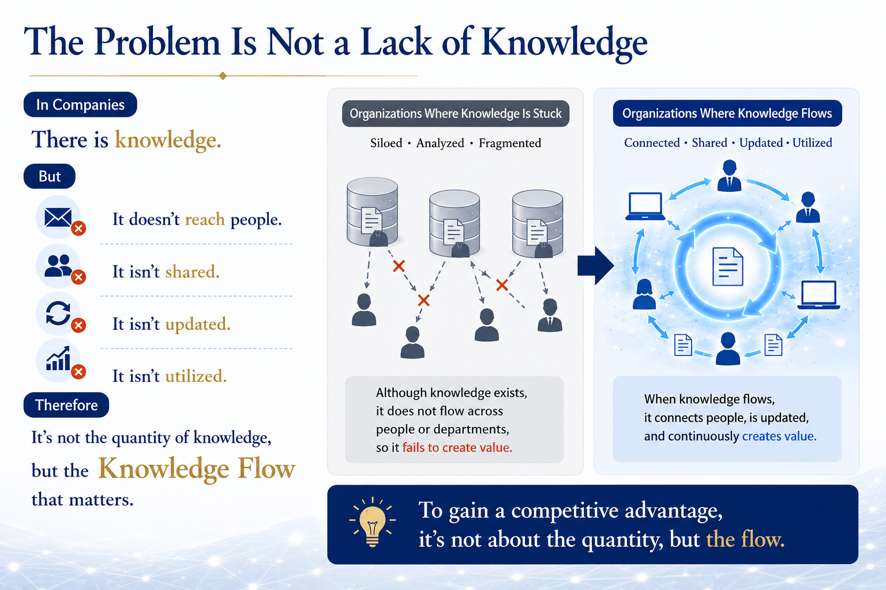
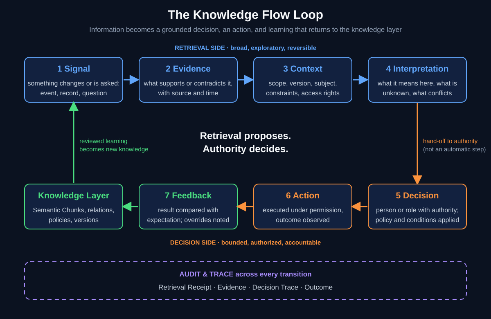
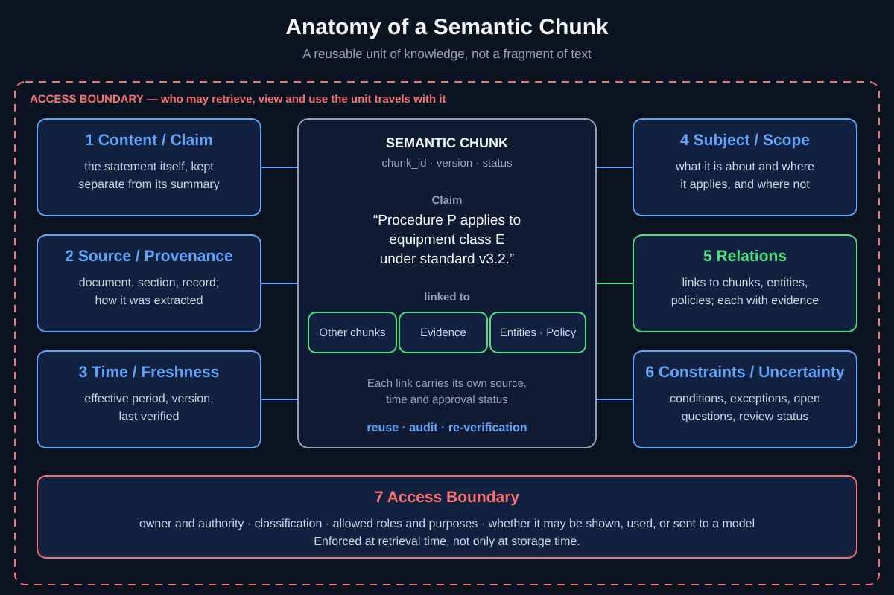
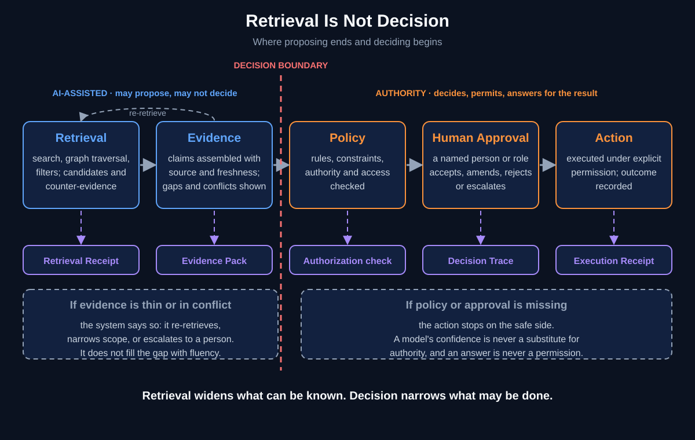
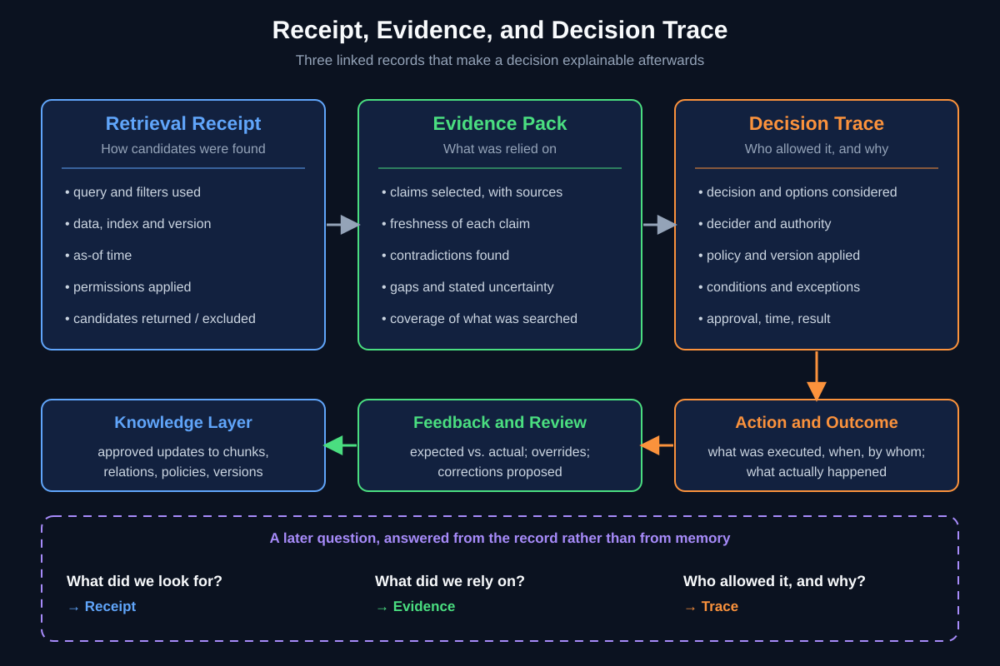
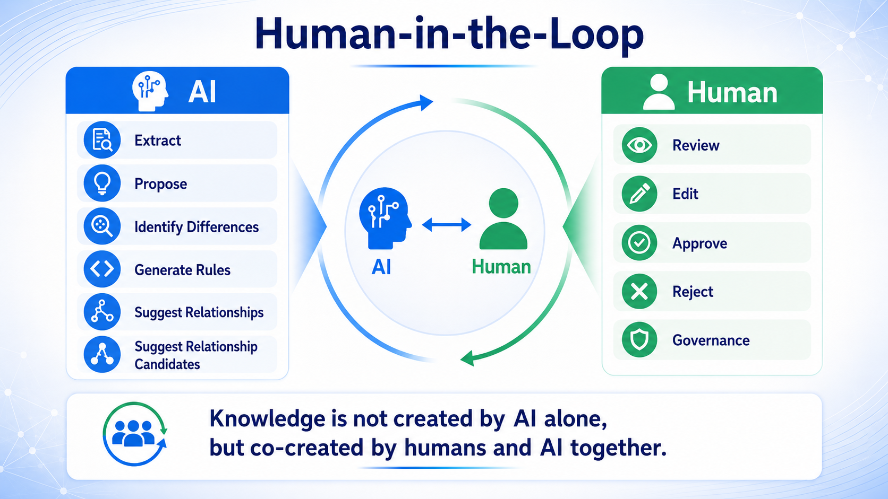

Collecting information is not the same as being able to learn from it. Finding a passage is not the same as being entitled to act on it. An answer is not yet a decision.
Knowledge Flow is not the movement of documents through an organization. It is the governed transformation of signals and evidence into decisions, actions, and learning — while preserving context, boundaries, and traceability. Storage and search are necessary parts of that path, but they are parts. What makes an organization able to judge and learn is that source, time, context, authority, uncertainty, responsibility, and outcome stay connected from the first signal to the last lesson, and that what was learned returns to the knowledge base where the next decision can find it.
Documents are ingested, indexed, and retrievable. Whether a passage is current, applicable, permitted, or contradicted is left to whoever reads it.
Evidence arrives with its source, time, scope, and access rules. A named person decides under stated authority, and the result returns as reviewed knowledge.
Most organizations do not suffer from a shortage of documents, tickets, messages, and records. Generative AI has made producing more of them nearly free. What stays scarce is the ability to bring the right piece of knowledge to the right decision with its meaning, validity, and limits still attached. Six things quietly break that path.
The contrast is easiest to see side by side: the same knowledge, once stuck in separate places, and once connected, shared, updated, and used.

Each team keeps its own records, vocabulary, and exceptions. The same word means different things, and no one sees where the pieces would connect.
A rule copied out of its document no longer says which product, region, or version it governs, or what exception was attached to it.
Knowledge that was true when written keeps being retrieved after it has been superseded, and nothing signals that it has aged.
A highly ranked passage is treated as a conclusion. Relevance to a question is confused with authority to act on the answer.
When an AI assembled the basis for a choice, it becomes hard to say who accepted it, under what authority, and with what known gaps.
Permissions live in the source systems. Once content is copied, summarized, or embedded, those limits are easily flattened or lost.
Two further distinctions explain why more distribution does not produce more flow. Sharing is not propagation: putting a document where others can open it makes it available, but knowledge only moves when someone adopts it, applies it, corrects it, and passes it on. And many failures labeled as missing knowledge are routing failures: the knowledge existed, but it never reached the person or process that needed it, in a form that fit their situation. Similarity search finds neighbours. It does not weigh role, timing, priority, or what the reader is about to decide.
Better search and larger models help with some of these and leave others untouched. More retrieved text does not settle whether a statement still holds, whether it applies here, whether the person asking may see it, or who answers for acting on it. Those questions need the connections between information and its source, time, context, authority, uncertainty, responsibility, and result — which is what the rest of this page calls flow.
Documents are inputs, not the unit of flow. What moves through an organization is a chain of transformations: something happens, evidence is gathered, context is applied, a meaning is proposed, a person decides, work is done, and the outcome is observed. Knowledge is not a stock that is built once. It is revalidated and updated every time the loop turns.

| Stage | The question it answers | What must survive the step |
|---|---|---|
| Signal | What changed, or what is being asked? | Origin, timestamp, and who or what raised it. |
| Evidence | What supports this, and what contradicts it? | Source, provenance, and the age of each claim. |
| Context | Which situation, scope, and version does this apply to? | Subject, constraints, effective period, and access rights. |
| Interpretation | What does it mean here, and what remains unknown? | Stated uncertainty, open conflicts, and the reasoning offered. |
| Decision | Who may decide, under which policy, and with what conditions? | Decider, authority, policy version, and exceptions granted. |
| Action | What was done, and was it permitted? | Execution record tied to the decision that allowed it. |
| Feedback | What happened, and what should change? | Outcome versus expectation, overrides, and proposed corrections. |
A repository preserves. A flow keeps checking. Each pass through the loop asks again whether the evidence is still valid, whether the context still holds, and whether the last decision turned out as expected. Knowledge that is never revalidated becomes an archive no matter how well it is organized.
There is a deeper reason. Meaning depends on a situation that keeps changing, so what an archive really holds is evidence from which knowledge is rebuilt each time it is needed. A reusable unit therefore has to carry its context with it and be interpreted again at the point of use.
Feedback does not rewrite the knowledge base on its own. An override, a correction, or a surprising outcome becomes a candidate that is reviewed against the same standards as any other claim, then published with a version and an owner. That keeps learning from becoming drift.
Change arrives from many directions, not only new documents: a revised policy, a design change, a legal update, a repeated human override, an acknowledged gap in what the system could answer. Each is treated as a common change event, compared with the current version, assessed for impact, and only then proposed for review.
For flow to carry meaning, something has to carry it. A document chunk is cut for convenience of search. A Semantic Chunk is cut along meaning and keeps what a later reader needs in order to trust, limit, or challenge it: where it came from, when it held, what it is about, what it connects to, what it does not claim, and who may see it.

| Element | What it holds | What it makes possible |
|---|---|---|
| Content / Claim | The statement in its own terms, distinct from any summary of it. | Checking a summary against what was actually said. |
| Source / Provenance | Document, section, record, and how the claim was extracted. | Audit back to the original, and weighting by source reliability. |
| Time / Freshness | Effective period, version, and when it was last verified. | Reproducing what was known at the time, and spotting stale claims. |
| Subject / Scope | What it is about, where it applies, and where it does not. | Keeping a rule from being applied to the wrong product or region. |
| Relations | Links to other chunks, entities, and policies, each with its own evidence. | Multi-source reasoning, impact analysis, and conflict detection. |
| Constraints / Uncertainty | Conditions, exceptions, open questions, and review status. | Saying what is unresolved instead of presenting a clean answer. |
| Access Boundary | Owner, classification, and the roles and purposes allowed to use it. | Reusing knowledge across teams without flattening permissions. |
A passage that says equipment should stop above a threshold is incomplete without the equipment class it names, the standard version it comes from, the exception procedure beside it, and the role authorized to act on it. Cut by length or by heading alone, the passage retrieves well and misleads quietly. The risk is not a missing answer. It is a confident answer without its conditions.
A summary has the same weakness. It is useful for understanding, but it drops who said something, when, on what evidence, and under which conditions, so it cannot be the basis of a decision. The chunk is the knowledge underneath the summary.
Extraction produces candidates. A candidate becomes a trusted chunk only after validation and review proportional to what it could affect. Passing a format check proves only that the output is well formed, not that it is true, current, or permitted.
When a mapping cannot be confirmed, such as two terms that might be one concept, two rules that disagree, or a date that is missing, the chunk records it as open instead of forcing a merge. An open item can block automatic action downstream. A system that shows fewer open items because it merged aggressively is less trustworthy, not more.
Candidates move through explicit states: extracted, resolved, validated, reviewed, approved. Approval of a chunk as knowledge is still not eligibility to authorize an action. Those are separate questions with separate owners.
Being allowed to view a chunk, to use it in a recommendation, to send it outside the organization, and to change it are four different permissions, often held by different owners. Derived knowledge inherits the restrictions of its sources, and when several sources contribute, the strictest classification applies. Defaults fail closed.
Sometimes even the existence of related evidence has to stay hidden from a requester. That is why the boundary belongs to the chunk itself rather than to a filter bolted on afterwards.
Full-text search, vector search, RAG, and Graph RAG are strong ways to find candidates, evidence, and counter-evidence. They are components of Knowledge Flow, not the whole of it. Treating the best-ranked result as the decision collapses two different jobs into one, and removes the place where authority and responsibility should enter.

| Component | What it contributes | What it does not settle |
|---|---|---|
| Full-text search | Exact terms, identifiers, clause numbers, and names that must match literally. | Synonyms, paraphrase, and whether the match still applies. |
| Vector search | Semantically similar passages, even when the wording differs. | Version, scope, and permission. Similar is not applicable. |
| RAG | Grounding a generated answer in retrieved passages, with citations. | Whether the passages are sufficient, current, or in conflict. |
| Graph RAG | Following relations across sources: dependencies, approvals, affected parts. | Whether an edge was verified, and who may act on what it implies. |
| Policy and approval | Rules, constraints, authority, and a named person who accepts the result. | This is where the decision is made. Retrieval cannot stand in for it. |
A useful system does not only answer. It shows how well the answer is supported:
A decision carries authority, accountability, and the power to commit resources or affect people. A model has none of these. It can be wrong without being aware of it, and its confidence says little about whether an action is permitted. A decision is a commitment under uncertainty that someone owns. So the model proposes, compares, and flags, while a person or role with stated authority accepts, amends, rejects, or escalates. Lower risk actions can be delegated in advance under explicit policy, and that delegation is itself a recorded decision.
An answer is not a permission.
Relevance is not authority.
Before an answer becomes an action, four things are confirmed: what the terms mean here, what the evidence is, which definition and version held at that moment, and who may rely on it under which policy. The outcome is one of three: act, ask a person, or stop.
That outcome is a boundary the system enforces, not a more cautious tone in the model's wording. A rising number of stops is not necessarily a failure. An unsupported answer that was blocked is the system working as intended.
When sources disagree on a number, a procedure, an approver, or a condition, the system does not assert one side or count which version appears more often. It weighs authority, version, effective date, and context, presents the more formal source while stating that a conflict exists, and routes it for resolution.
Conversations are valuable, but they enter as candidates to be checked against formal sources. A formal regulation's emergency rule can still apply in a different context from its normal one.
Permissions have to be applied while retrieving, not afterwards. If vector or graph search ranges over everything and results are hidden at the end, the ranking and the generated text have already used what the requester was never allowed to see.
Accountability depends on being able to reconstruct a decision afterwards from a record, not from recollection or from a model's own explanation of itself. Three linked records do that work, and the loop closes when they feed learning back.

Records how candidates were obtained: the query and filters, the data, index, and knowledge-snapshot version, the as-of time, the permissions applied, and what was returned or excluded. It lets someone repeat or question the search.
The claims actually relied on, each with source and freshness, together with contradictions found, gaps, stated uncertainty, and coverage. Missing support is part of the evidence, not an omission from it.
Records who decided, under which authority, which policy and version applied, what conditions or exceptions were attached, and when. It connects the evidence to the permission to act.
Kept together, the three serve two purposes. For accountability, they answer after the fact what the decision rested on and why it was allowed. For learning, they let a team compare what was expected with what happened, and find whether the cause was thin evidence, a stale source, a missing rule, or a judgment call worth encoding. Without the record, feedback has nothing to attach to.
Organizations tend to keep outcomes and lose reasoning: the alternatives weighed, the assumptions made, the trade-offs accepted. A trace is therefore not a debug log. It links the request, the evidence, the approval, the act, ask, or stop judgment and its reason, the review gate, the execution, and the later outcome, so an error can be located in extraction, in mapping, in evidence selection, in policy, in authority, or at review, instead of being written off as the AI getting it wrong. To reproduce a past decision, replay the rules and knowledge as they stood at that time, identified by a snapshot of versions fixed when the decision was made, not by asking today's model again. Valid time and recorded time stay separate, so a corrected threshold does not rewrite what was known earlier.
The layers below are a way of seeing responsibilities, not a product blueprint or a mandate for a single platform. Each layer owns one thing, hands off through a recorded interface, and keeps the source's boundaries instead of absorbing them. Knowledge Flow connects, verifies, and learns across teams without pulling their knowledge into one central owner.
Each department keeps ownership of what it knows and who may see it. The flow adds shared identifiers, relations, and checks between them. A claim from one team can inform another team's decision without becoming that team's to edit, and without the owner's boundary being dissolved along the way. What is shared is a semantic layer of common identifiers and relations that connects sources. No single repository can hold everything or stay current with it, and derived knowledge keeps the access rules of the source it came from.
Human Review is where proposal and acceptance become concrete. This lighter, earlier illustration shows the exchange: the AI proposes and highlights differences, and a person reviews, edits, approves, rejects, or governs.

A fluent answer proves nothing about its own basis. The test of a Knowledge Flow system is whether, for an important decision, it can show each of the following from its records.
| The question | What it should be able to show | Where the proof lives |
|---|---|---|
| Does evidence exist? | Claims tied to identifiable sources, or an explicit statement that support is missing. | Evidence Pack, chunk provenance |
| Is it still valid? | Effective period, version, and last verification for each claim, checked against the decision date. | Chunk time fields, Retrieval Receipt as-of time |
| Were contradictions checked? | Conflicting sources searched for, found or not found, and how any conflict was resolved or escalated. | Evidence Pack, Retrieval Receipt |
| Was access appropriate? | Permissions inherited from the sources and applied before ranking, and what was excluded because of them. | Retrieval Receipt, access boundary |
| Are decider and approver clear? | A named person or role, the authority they acted under, and the policy version applied. Approved knowledge alone is not permission to act. | Decision Trace |
| Can the result be followed? | The action taken, when, and its outcome, linked to the decision that permitted it. | Execution record, Decision Trace |
| Can learning return? | Feedback captured, reviewed, and published as a versioned change to knowledge or policy. | Feedback log, knowledge-layer version history |
A system that cannot show one of these rows is not necessarily wrong. It is unable to demonstrate that it was right, and the decisions that depend on that row deserve extra review.
The same structure appears in very different work. In each case, the AI's job is to gather and organize, a person's job is to decide, and the record decides how much can be learned afterwards.
| Pattern | What the AI handles | What people decide | Evidence and trace to keep |
|---|---|---|---|
| Internal investigation | Searches records and messages, builds a timeline, and flags gaps and conflicting accounts. | What the findings mean, who is told, and what follows. | Sources reached and not reached, the timeline with provenance, and the reviewer's conclusion. |
| Operational incident review | Correlates logs, change records, and past incidents, and proposes candidate causes. | Accepted root cause, remediation, and whether to change a procedure. | Receipt of what was queried, evidence for each candidate cause, and the approved corrective action. |
| Policy and contract check | Locates applicable clauses and versions, and notes exceptions and overlaps. | Interpretation, approval of an exception, or escalation to legal or compliance. | Clause versions and effective dates, conflicts noted, and the approver with their authority. |
| Customer response support | Retrieves entitlement, history, and current guidance, then drafts a reply. | What is promised, any exception to standard terms, and when to hand off. | Sources behind each statement in the reply, and any exception granted with who granted it. |
| Design review | Compares a proposal with standards, prior decisions, and dependencies across parts. | Approval, required changes, or accepted deviation with its rationale. | Standards and versions checked, impacts found through relations, and the recorded sign-off. |
These are generalized patterns for discussion, not descriptions of any particular organization, customer, or deployment, and they carry no claims about results. What may be automated in a given setting depends on its risks, regulations, and the evidence gathered there.
The usual first move is to ingest everything. A more reliable path starts from a single decision that matters and builds only the knowledge flow that decision needs, then widens as the record proves itself.
Pick one recurring decision where bad evidence is costly and the people involved are known. Define what a good outcome looks like.
List the sources that count, who owns them, who may see them, and who may decide. State what the system may propose and what it must not.
Shape Semantic Chunks for that scope and test retrieval against real questions, including ones whose right answer is that evidence is missing.
Have every answer return an Evidence Pack and a Retrieval Receipt, so reviewers can see support, gaps, and conflicts instead of only prose.
Operate with named reviewers on a bounded set of cases. Record Decision Traces and measure how often review changed the outcome.
Compare outcomes with expectations, turn overrides and corrections into reviewed knowledge changes, and only then widen scope or autonomy.
The books, videos, and essays below go deeper on the pieces this page connects — the Knowledge Flow pipeline, Semantic Chunk, Evidence-Grounded Ontology, and the Decision Runtime — so a reader can follow the same arc in whichever medium fits.
The practical guide behind this page's architecture. It works through how document ingestion, semantic chunking, knowledge extraction, Ontology resolution, Knowledge Graph construction, DSL formalization, human review, and versioned repositories combine into one pipeline — one that delivers knowledge the Decision Runtime Kernel and Runtime OS can actually decide on.
View on Amazon → Kindle · Masao WatanabeNeighboring practical guides on the knowledge, semantic, and runtime layers this page connects.
Visual introductions to Knowledge Flow, Knowledge Infrastructure, and the runtime it feeds.
Long-form essays behind this page's argument, on knowledge infrastructure, retrieval, and runtime governance.
Knowledge Flow matures not when information moves faster, but when the loop from signal to evidence, decision, action, and learning improves with each turn. Better evidence, clearer authority, honest statements of what is not known, and a record that lets the next person ask why. That is how an organization learns, without giving up its boundaries along the way.